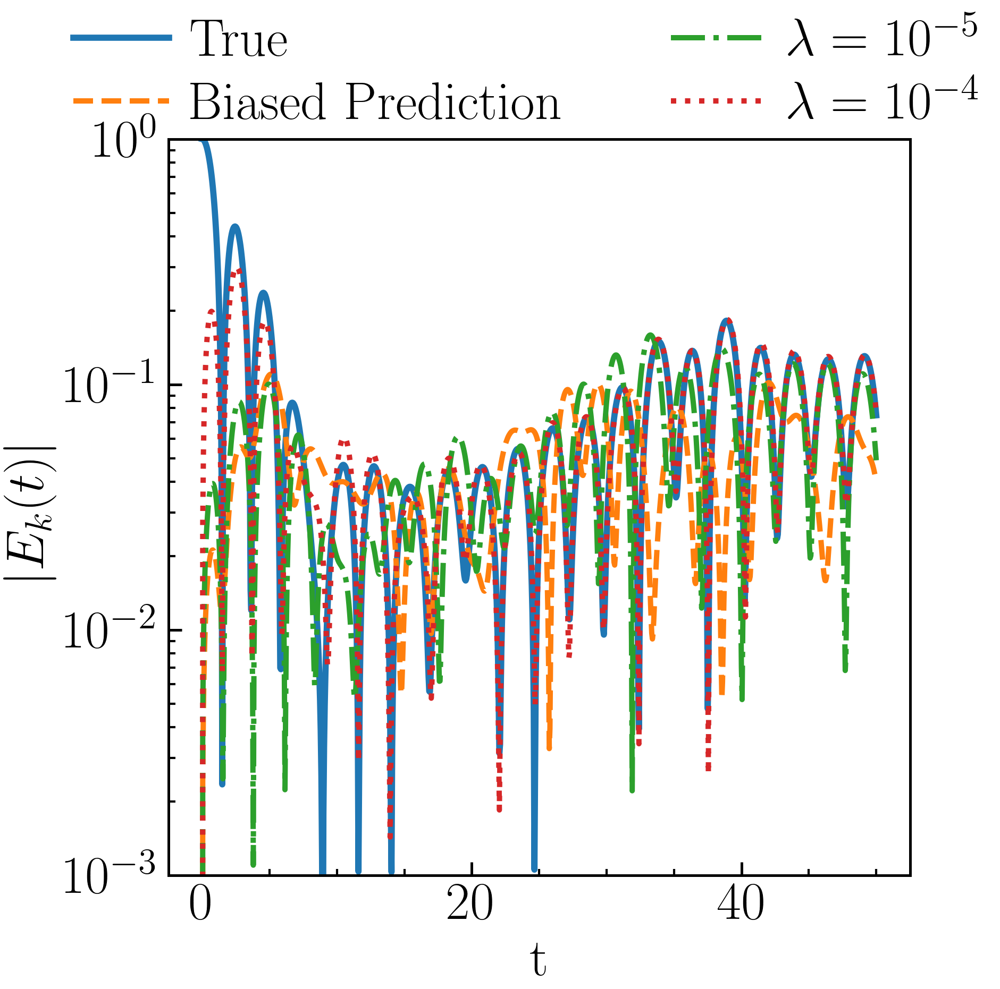
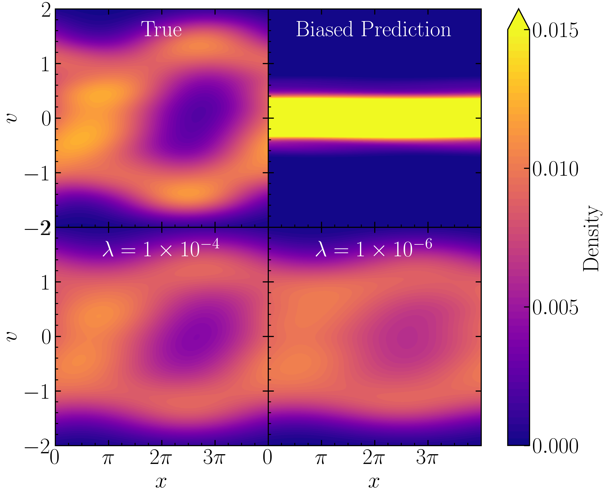
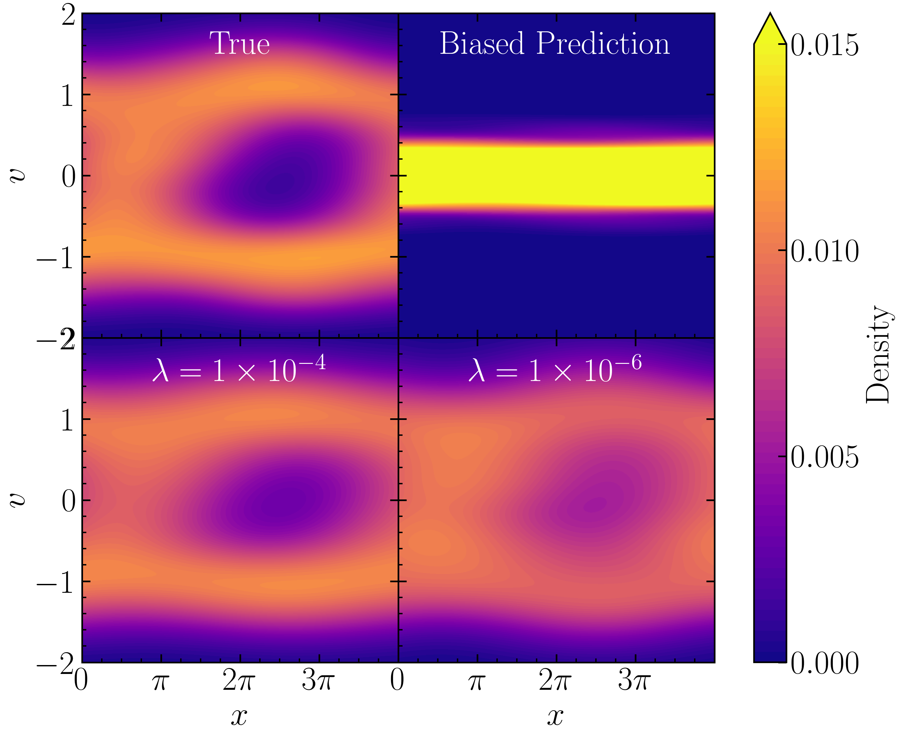

Goal. Add a feedback (nudging) term to the approximate mean-field SDE so the model distribution stays consistent with macroscopic observations.
True vs. model dynamics (McKean–Vlasov)
True process \(\bX_t\in\Rd\):
\[
\intd \bX_t = \btrue(\bX_t,\mu_t)\,\intd t + \Sigma\,\intd\bW_t,\quad \mu_t=\Law(\bX_t).
\]
Approximate model \(\bY_t\) (drift known only approximately):
\[
\intd \bY_t = \bmodel(\bY_t,\nu_t)\,\intd t + \Sigma\,\intd\bW_t,\quad \nu_t=\Law(\bY_t).
\]
Model bias:
\(
\mathbf{R}(\bx,\mu) := \bmodel(\bx,\mu) - \btrue(\bx,\mu).
\)
Sznitman '91 (propagation of chaos); Carmona–Delarue (mean-field lectures).
What do we actually observe?
Let \(K_h(\bx)=h^{-d}K(\bx/h)\) be a smoothing kernel (e.g.\ Gaussian), bandwidth \(h\).
Case A — pixel / density observation
\[
\muobs_t(\bz) = (K_h*\mu_t)(\bz).
\]
Satellite imagery, reconstructed densities.
Case B — unlabeled particle locations
\[
\muobs_t(\bz) = \tfrac{1}{M}\sum_{k=1}^{M} K_h(\bz-\bX_t^{\mathrm{obs},k,M}).
\]
Tracking with dropouts, no index matching.
Both cases enter the same assimilation framework through the same measure \(\muobs\).
Observation misfit functional
Quadratic observation-misfit functional (smoothed at observation scale \(h\)):
Structure-preserving. If \(\bmodel=-\nabla\frac{\delta F}{\delta\nu}\) and \(\Sigma=\sqrt{2\beta}\,\mathbf I\), the assimilated system is itself a Wasserstein gradient flow of
\[
\mathcal F_t(\nu) \;=\; F(\nu) + \lambda\,J_{\mathrm{nud},h}(\nu,\muobs_t) + \beta\,\mathrm{Ent}(\nu).
\]
Nonlinear Fokker–Planck for \(\nu_t=\Law(\bZ_t)\), with \(A=\Sigma\Sigma^\top,\ r=K_h*\nu_t-\muobs_t\):
\[
\begin{aligned}
\partial_t\nu_t \;=\;& -\nabla\!\cdot(\nu_t\,\bmodel) + \nabla\!\cdot(A\nabla\nu_t) \\
& +\,\lambda\,\nabla\!\cdot\!\big(\nu_t\,\nabla(K_h*r)\big).
\end{aligned}
\]
Proposition (Well-posedness)
Under Lipschitz \(\bmodel\) in \((\bx, W_2)\) and Lipschitz \(\nabla\widetilde K_h\), for any \(T>0\) and \(\bZ_0\sim \mathcal P_2(\Rd)\), the assimilated SDE has a unique strong solution on \([0,T]\); its law solves the FPK equation above.
Proof: synchronous coupling, Itô + Grönwall, with a \(1/N\) decorrelation term from the i.i.d.\ copies. (Sznitman; Chaintron–Diez.)
Main result — assumptions
\(\Omega=\mathbb T^d\); \(A=\Sigma\Sigma^\top\) SPD with smallest eigenvalue \(\kappa>0\). Error \(e_t:=\nu_t-\mu_t\), energy \(V(t):=\tfrac12\|e_t\|_{L^2}^2\).
(C1) \(L^2\)-Lipschitz model drift: \(\|\bmodel(\cdot,\mu)-\bmodel(\cdot,\nu)\|_{L^2}\le L_\mu\|\mu-\nu\|_{L^2}\).
(C2) Density bounds: \(\|\mu_t\|_{L^\infty}\le\bar\rho,\ \nu_t\ge\underline\nu>0\).
Self-consistent coupling via the empirical density:
\[
-\Delta\phi(x,t) = \rho^N(x,t) - 1,
\qquad
\rho^N(x,t) = \tfrac{1}{N}\sum_{i=1}^{N}\delta(x-X_t^i).
\]
As \(N\to\infty\), the empirical phase-space measure \(f^N_t = \tfrac1N\sum_i\delta_{(X^i_t,V^i_t)}\) converges to the Vlasov–Poisson solution \(f_t\). Nudging acts on \((X^i,V^i)\) via the Wasserstein gradient of \(K_h*f^N - K_h*f\).
Biased model: same dynamics, but initialized from the unperturbed Maxwellian (\(\varepsilon=0\)) — no initial density modulation.

Phase-space density at final time — truth / biased / assimilated.
Two-stream instability — initial conditions
Truth — bimodal velocity distribution with weak spatial perturbation:
\[
f(x,v,0)\propto \tfrac12\bigl(f_{M,\sigma}(v-u_0)+f_{M,\sigma}(v+u_0)\bigr)\bigl(1+\varepsilon\cos(\kappa x)\bigr).
\]
\(\sigma=0.2,\ u_0=1,\ \varepsilon=0.01,\ \kappa=0.5\).
Biased model — single Maxwellian, same perturbation:
\[
f(x,v,0)\propto f_{M,1}(v)\bigl(1+\varepsilon\cos(\kappa x)\bigr).
\]
Misses the underlying two-stream structure entirely.
Two-stream instability — phase-space evolution

step 1000

step 2000
Each panel: reference (top) / biased (center) / assimilated (bottom). Nudging on \(K_h*f\) recovers filamentation and vortex merging absent from the biased model.
Back to the fish — setup
~1000 fish in a quasi-2D tank [Walter & Couzin 2021].
Trajectories have occlusions and index dropouts — no consistent particle labeling.
Observation: KDE density at discrete times — Case B (unlabeled locations).
Biased model: generic interaction without the true inter-fish coupling.